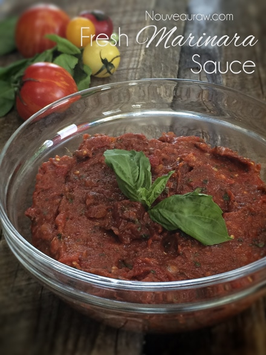
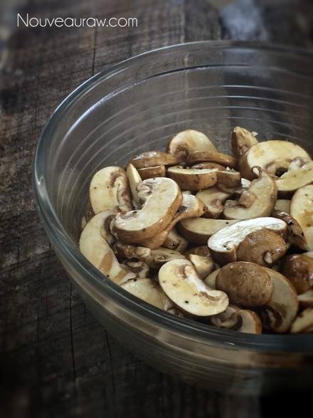
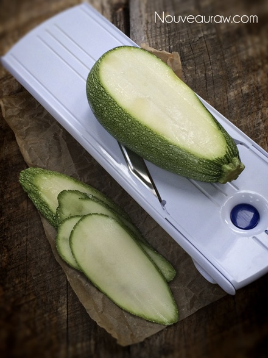

Living Lasagna

~ raw, vegan, gluten-free ~
Living Lasagna is not only aesthetically pleasing to the eye with its vibrant colors, but it is also rich in flavor and nutrients. This dish is made with all raw, living foods that will have you walking away from the table feeling light, nourished and well satisfied.
I compiled this dish with beautiful layers of; al dente prepared zucchini noodles, a rich and robust marinara sauce, “meaty” marinated mushrooms, gently massages spinach and a creamy almond based ricotta cheese.
Though this particular lasagna is not baked in an oven as you might be accustomed to, it is warmed gently all the way through in a dehydrator. The dehydrator is not only good for warming foods, but it also helps to create beautiful aromatics that will get your mouth-watering and tummy grumbling.
As you scroll through the ingredients, you might start to feel over-whelmed … WAIT!! DON’T GO!! … I hope that you can appreciate the beautiful nourishment that comes from making this dish. Yes, there are a few steps to it, but it can all come together with grace and ease… grace and ease I tell you.
What I like to do is to create a few of the components the day before. The cheese requires it anyway for culturing purposes, and by breaking it up, it will help, so it doesn’t feel so daunting. You can make the ricotta, marina and marinated mushroom in advance. The sauce and mushrooms can be done 10-20 minutes prior to making the dish, but I find that the flavors deepen and meld together more when they mingle through the night.
And remember as you approach this dish… it is entirely made from scratch. This is the perfect opportunity for you to control the quality of ingredients that are used to create this wonderful raw, living, Italian dish.
I originally posted this recipe on Nov. 22nd, 2010… it was time to revamp it a bit and add some fresh photos.
Yield: One 7 x 7-inch casserole (4-6 servings)
Almond Ricotta layers:
- 1 cup almond cheese
- 2 Tbsp raw white miso
- 1 1/2 Tbsp red onion, minced
- 2 tsp nutritional yeast (Red Star Brand recommended)
- 1/2 tsp crushed garlic
- Pinch of nutmeg
- Pinch of white pepper
Marinara Sauce
- 6 Roma tomatoes, seeded and chopped (6 cups worth)
- 1/2 cup sun-dried tomato powder
- 1 1/2 Tbsp finely minced onion
- 1 1/2 tsp crushed garlic
- 1 1/2 Tbsp minced fresh basil leaves
- 1 1/2 Tbsp minced fresh oregano
- 1/2 tsp Himalayan pink salt
- Pinch of pepper
Noodle layers:
- 2 large zucchini, sliced 1/16” thick lengthwise
- sea salt
Spinach Layer
- 1/2 lb spinach, washed and spun dry
Mushroom layers:
- 16 oz mushrooms, washed and sliced
- 2 Tbsp Tamari
- 2 Tbsp cold-pressed olive oil
- Pinch of pepper
Preparation:
Almond Ricotta layers:
- In a medium bowl combine the prepared almond cheese, miso, onion, nutritional yeast, garlic, nutmeg, and pepper. Mix well and set aside.
Marinara Sauce:
- If you can’t find tomato powder and don’t want to order it, you can make your own. Dehydrate tomato slices till very dry and grind to a powder in a spice/coffee grinder.
- To remove the seeds, cut the tomato in half and with a small sharp spoon, scoop out the seeds. Leaving the seeds in the tomato will cause the sauce to be too watery. Place the Roma tomatoes in a colander to allow any remaining liquid to drain, (Drink the wonderful juice or add it to another recipe.)
- When the tomatoes are thoroughly drained, put them in a food processor outfitted with the “S” blade, and pulse to chop. Do not over process; the mixture should be slightly chunky, like a salsa.
- Add the sun-dried tomato powder, onion, garlic, basil, oregano, salt, and pepper, and pulse to mix.
- Let the sauce sit for at least 10 minutes (or over-night) before assembling the lasagna, to allow it to thicken. If the sauce is too wet, drain off a little of the juice.
Noodle layers:
- Slice the zucchini into even slices with a mandolin.
- Place the zucchini slices on a dehydrator tray lined with a nonstick reflex sheet, and dehydrate at 105 degrees for an hour, to soften.
- OR, soak for 1 hour in a salt-water brine, then drain well and towel dry.
Spinach Layer:
- Wash the spinach leaves and place them in a salad spinner to release the water on it. You can also place the wet spinach on a dry paper towel and blot the excess water off.
- Place the spinach in a food processor, fitted with the “S” blade until it is ground, but not overly processed. You want to be able to identify it and not make a paste out of it.
- Squeeze out the excess moisture from the spinach and set aside in a bowl. This is important. You don’t want the spinach “soupy” causing puddles of liquid in your lasagna.
Mushroom layers:
- Wash and dry each mushroom. Make sure to remove all of the dirt. Don’t soak them in water. Use a damp paper towel to wipe each one off.
- Toss the mushrooms in the Tamari, olive oil, and pepper.
- Set aside for at least 10 minutes or overnight.
- Drain well and gently squeeze to remove excess liquid.
Assembly:
- Spread a layer of marinara sauce in the bottom of the pan of your liking, and place a layer of the softened zucchini noodles on top.
- Spread another layer of sauce over the zucchini, then a layer of the mushrooms, and press, using a spatula.
- On top of the mushrooms, put a thin layer of cheese, followed by a layer of spinach. Press firmly and continue layering. Begin with the zucchini, then the sauce, mushrooms, cheese and spinach. Press firmly between all layers.
- Create a least one more layer of each item and finish with a final layer of sauce, dotted with cheese.
- Serve immediately at room temperature or warmed slightly in a dehydrator set at 145 degrees for 30 minutes to 2 hours.
- Store leftovers in an airtight container in the fridge up to 2 days.




© AmieSue.com